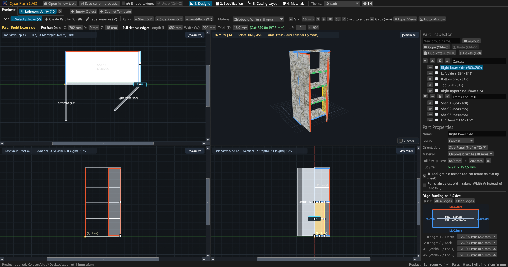
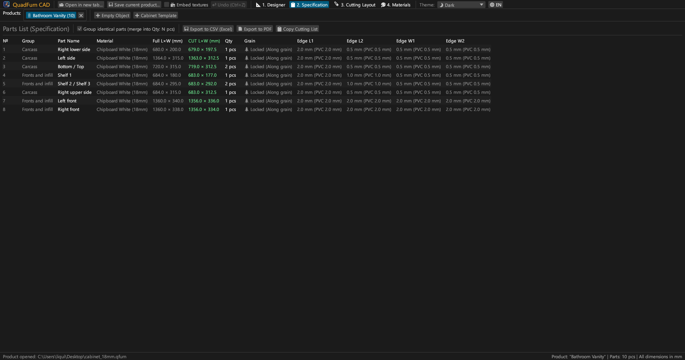
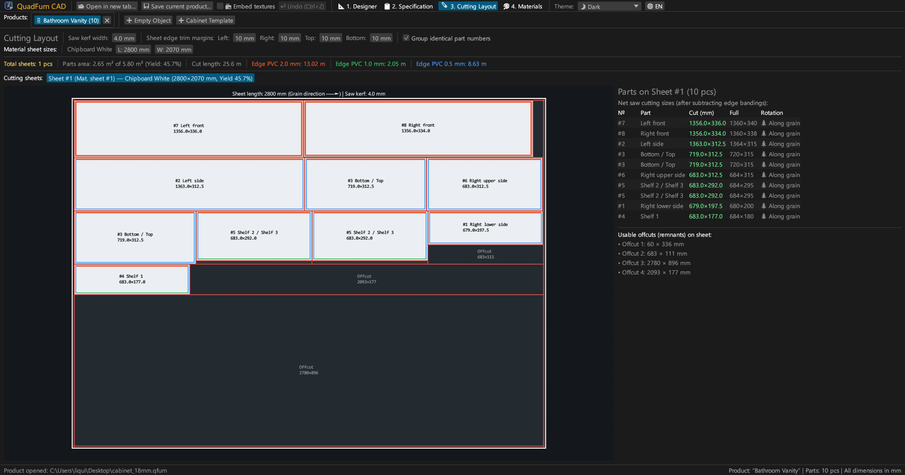
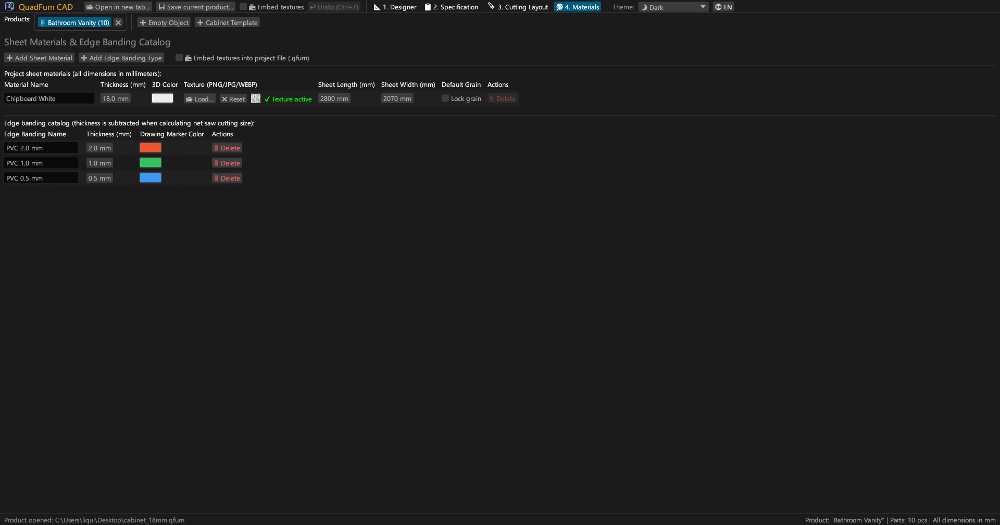
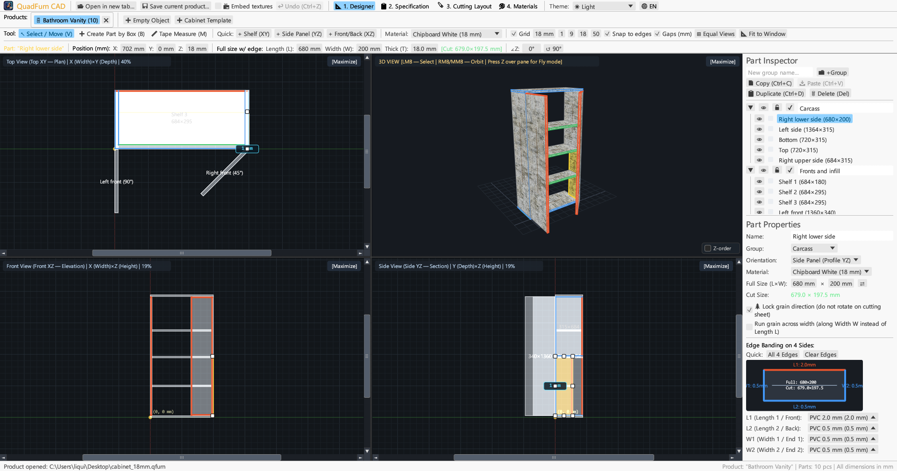
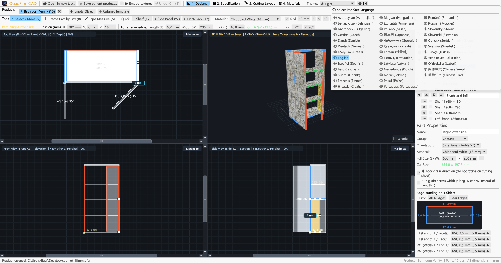

Fast, hardware-accelerated CAD for cabinetmakers. 4-viewport synchronized spatial modeling, automatic edge banding deduction, and 2D sheet nesting — now available in browser and on desktop.

Combines 4-viewport synchronized CAD drafting, numeric transform controls, and guillotine sheet layout optimization into one cohesive application.
Simultaneous editing across Top (XY Plan), Front (XZ Elevation), Side (YZ Section) and 3D Perspective. Magnetic edge snapping, millimeter rulers, and live gap dimensions.
Instant coordinates (X, Y, Z), full dimensions (L × W × T), and angle (∠Z) inputs with integrated arithmetic expression parser: type 600-4 or (800-36)/2 directly.
Assign PVC/ABS edge tape (0.4–2.0 mm) to 4 edges (L1, L2, W1, W2) to compute exact net saw cut dimensions for panel saws automatically.
Fast guillotine cutting optimizer honoring wood grain direction, saw blade kerf (e.g. 4.0 mm), board edge trim margins, and tracking usable offcuts.
Work on multiple furniture items simultaneously in tabs. Copy and paste parts across projects with automatic material and edge transfer.
Export print-ready A4 Landscape documents: specification table, 4-view drawings, sheet cutting diagrams, and material/edge summary with +15% waste allowance.





Standalone native desktop binaries with zero external dependencies.
Standalone executable with icon, no installer required.
sudo apt install ./quadfurn_0.2.5_amd64.deb
Universal App bundle for Apple Silicon (M1–M4) and Intel x86_64.
| Key / Shortcut | Action | Scope |
|---|---|---|
| V | Select / Move tool (drag to move, 8 resize handles, marquee box selection) | 2D Viewports |
| B | Create Part by Box (drag rectangle to create panel in current plane) | 2D Viewports |
| M | Tape Measure tool (measure exact ΔX, ΔY, L in millimeters) | 2D Viewports |
| Z | Toggle First-Person Free-Fly Mode (Noclip with WASD + mouse look) | 3D Viewport |
| ← → ↑ ↓ | Nudge selected part(s) by grid step (hold Shift for double step) | 2D Viewports |
| Ctrl + C / V | Copy / Paste selected parts (works across open product tabs) | All Tabs |
| Ctrl + D | Duplicate selected part(s) with offset | Active Project |
| Ctrl + S | Save project to .qfurn / .json file | Active Project |
| Ctrl + Z | Undo last modification (up to 40 history steps) | Active Project |
| Delete / Backspace | Delete selected part(s) | Active Project |